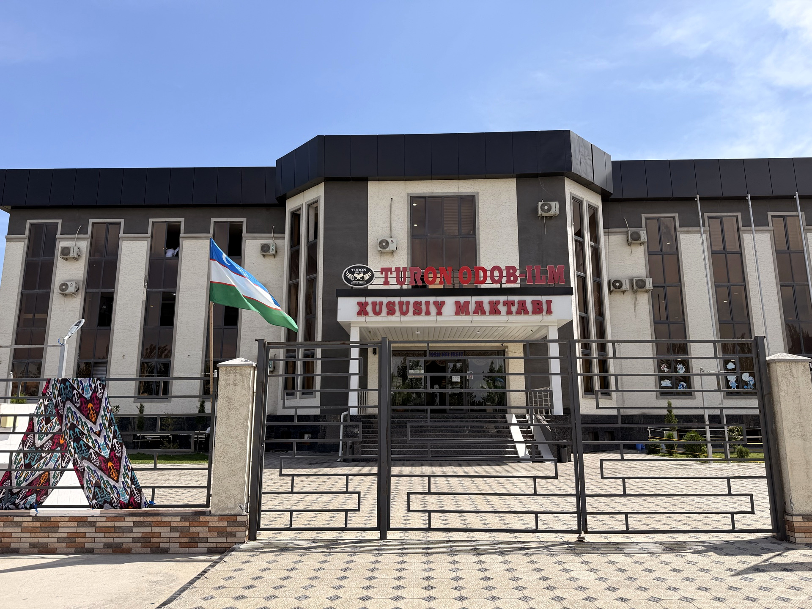
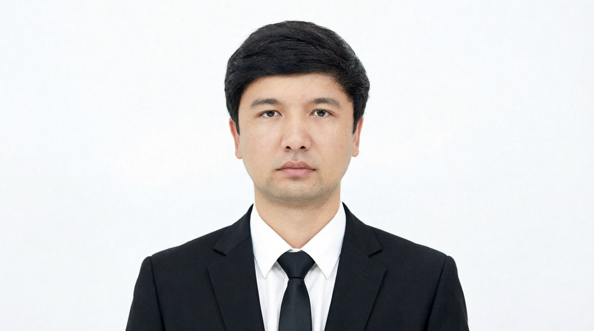
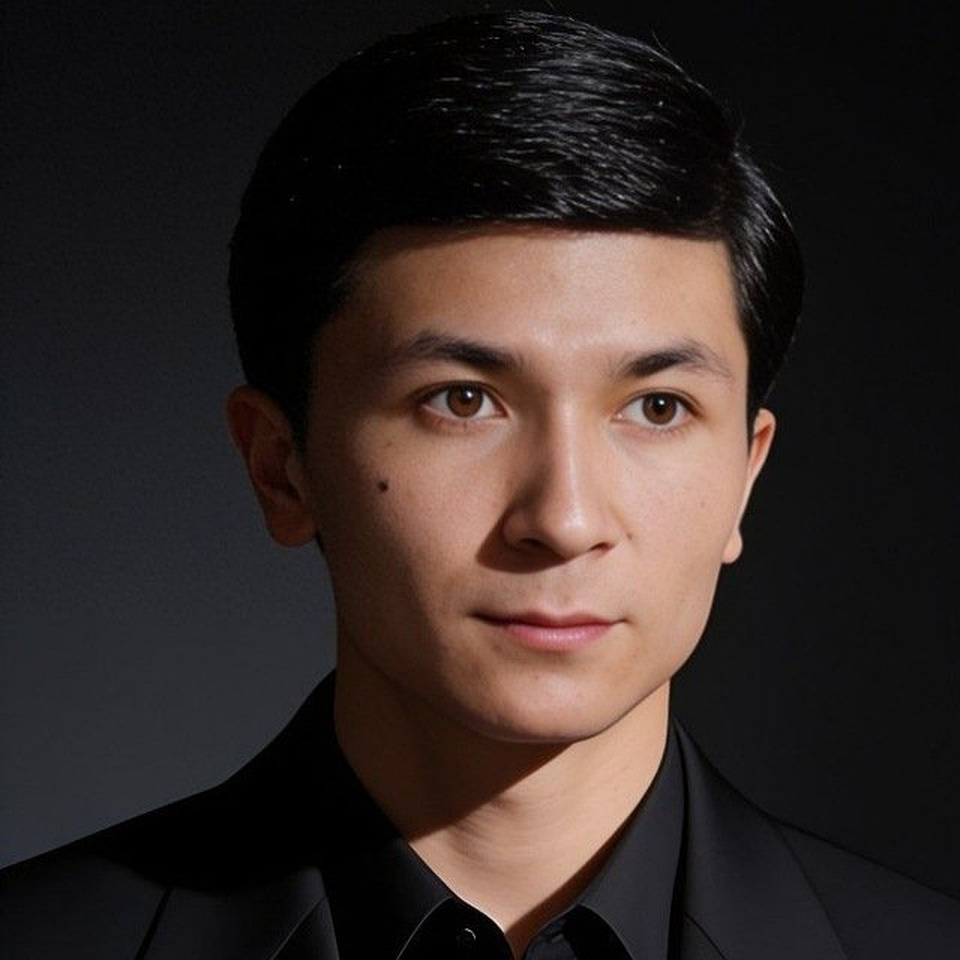

Tarix va maqsad
Maktabimiz 2022-yilda Furqat tumanida ochildi (Davlat litsenziyasi № 038782, 14.09.2022). Maqsadimiz — har bir o‘quvchiga sifatli ta’lim, axloqiy tarbiya va kelajak uchun zarur ko‘nikmalarni berish.

Turon Odob-Ilm xususiy maktabi 2022-yilda Furqat tumanida tashkil etilgan va 14.09.2022 yilda № 038782 davlat litsenziyasini olgan. Bugungi kunda maktabimiz Furqat, Oltiariq, Yaypan va Qo‘qonda (jumladan O‘zbekiston–Yaponiya markazi bilan hamkorlikda) zamonaviy ta’lim bermoqda.
Maktabimiz 2022-yilda Furqat tumanida ochildi (Davlat litsenziyasi № 038782, 14.09.2022). Maqsadimiz — har bir o‘quvchiga sifatli ta’lim, axloqiy tarbiya va kelajak uchun zarur ko‘nikmalarni berish.
Odob va mas’uliyat • Kichik sinflarda individual e’tibor • Kuchaytirilgan ingliz tili • Majburiy IT va dasturlash • Ota-onalar bilan ochiq muloqot.
Zamonaviy bino, brendlangan sinfxonalar, faol IT va dasturlash laboratoriyasi, o‘zbek va rus ta’lim oqimlari, shuningdek 10 ta yo‘nalishda maktab avtobusi xizmati.

Maktab direktori
“Bizning maqsadimiz — zamonaviy bilim, kuchli tarbiya va keng dunyoqarashga ega avlodni voyaga yetkazish.”
Turon Odob-Ilm xususiy maktabi rahbari.

IT va dasturlash fani o‘qituvchisi • IT WORLD muallifi
“Bola kompyuter va dasturlashni quruq yodlash bilan emas, balki qiziqarli 3D o‘yin, amaliy tajriba va kashfiyot orqali sevib o‘rgansagina haqiqiy natijaga erishadi.”
Turon Odob-Ilm maktabining yetakchi IT ustozi va o‘quvchilar uchun maxsus yaratilgan IT WORLD (aliyev-turon.netlify.app) interaktiv 3D o‘yin-ta’lim platformasi muallifi. Bolalarga kompyuter savodxonligi, 3D qurilmalar yig‘ish, tarmoqlar, kiberxavfsizlik, HTML/CSS/Python dasturlash va sun’iy intellektni zamonaviy o‘yin metodikasi orqali o‘rgatadi.
Ingliz tili ustozi
Rasmiy @turonodobilm YouTube kanalida tanishtirilgan ingliz tili o‘qituvchisi.
Davlat tomonidan berilgan litsenziya va tasdiqlangan hujjatlar.
O‘zbekiston Respublikasi tomonidan berilgan rasmiy ta’lim faoliyati litsenziyasi.